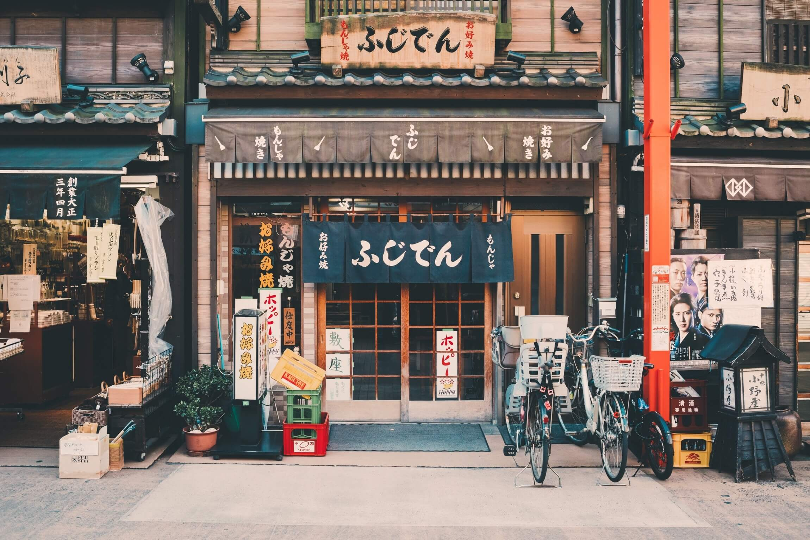
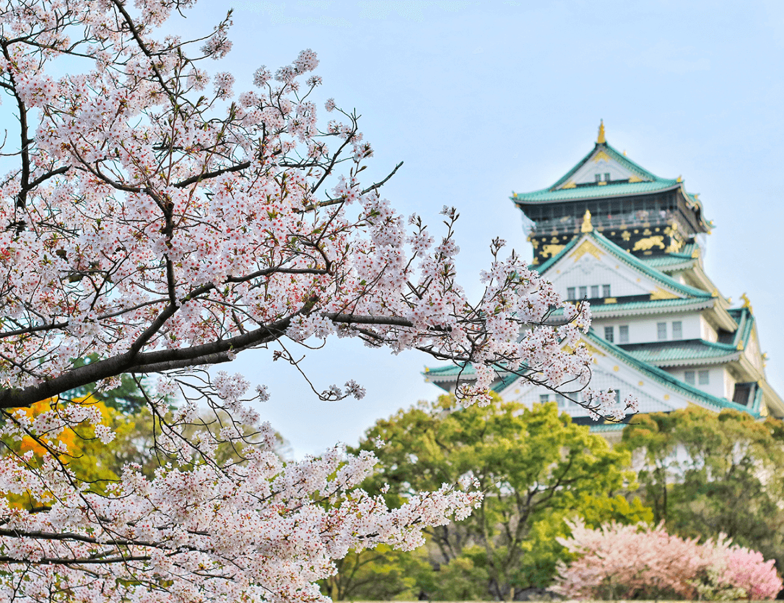

Historias de viajes de nuestros
clientes. ¡Inspirate, encuentra
itinerarios y consejos! ¿Cual es
tu proximo viaje?
Tokyo
La llegada:
Nuestro viaje comenzó en el Aeropuerto Internacional de Narita, situado
a unos 60 km de Tokyo. Después de aterrizar y completar todos los
trámites de inmigración, fuimos recibidos por el equipo de Jornada
Viajes, quienes nos llevaron hasta nuestro hotel.

Imagen de Tokio
Acomodaciones
Nos alojamos en el lujoso Hotel Okura Tokyo, ubicado en el barrio de Toranomon.
El hotel cuenta con una vista increíble de la ciudad y ofrece una amplia gama de servicios,
que incluyen un spa, una piscina, restaurantes de renombre y un bar lounge.
Quedamos encantados con la atención a los detalles y la calidad del servicio.
Imagen destacada de Tokio
Explorando la ciudad
Comenzamos nuestro recorrido por la ciudad con una visita al famoso Templo Sensoji,
uno de los templos budistas más antiguos e importantes de Japón.
Caminamos por la calle comercial Nakamise, donde encontramos muchas tiendas que vendían
artículos típicos japoneses, como kimonos, abanicos y comidas tradicionales.
Luego, visitamos el icónico cruce de Shibuya, uno de los más transitados del mundo,
donde observamos la sincronización de los peatones cruzando la calle.
Al día siguiente, visitamos el Parque Ueno, que alberga el Museo Nacional de Tokio,
donde pudimos conocer la historia y la cultura japonesa. Por la noche, fuimos a un típico Izakaya,
un bar japonés que sirve una gran variedad de platos y bebidas.
Compras
Tokio es famosa por sus grandes almacenes y centros comerciales, y no podíamos dejar de visitar algunos de ellos.
Fuimos al famoso distrito comercial de Ginza,
donde encontramos tiendas de las marcas más renombradas del mundo.
También visitamos el distrito de Akihabara, conocido como el centro de la electrónica
y el entretenimiento de Tokio, donde encontramos diversas tiendas de videojuegos, electrónica y mangas.
Gastronomía
No se puede hablar de Japón sin mencionar su gastronomía.
Tuvimos la oportunidad de probar una gran variedad de platos típicos,
como sushi, sashimi, ramen y tempura, además de dulces tradicionales como el mochi.
Concluyendo...
Nuestro viaje a Tokio con la agencia Viajes Jornada fue una experiencia inolvidable.
El equipo de la agencia se encargó de todos los detalles, desde la reserva del hotel
hasta la elección de los mejores lugares para visitar y comer. Recomendamos Viajes Jornada
a todos los que deseen hacer un viaje increíble a Japón.
Quizas tambien te interecen...

Osaka
Osaka es una ciudad animada y moderna en Japón. La ciudad es famosa por su deliciosa gastronomía y por ser un excelente punto de partida para explorar otras ciudades japonesas cercanas.
Kyoto
Kyoto es una ciudad ubicada en el centro de Japón, conocida por ser la antigua capital del país y preservar muchas tradiciones culturales japonesas. Con sus templos históricos, jardines tradicionales y ceremonias de té, es un inmersión en la cultura japonesa
Hiroshima
Ciudad ubicada en el suroeste de Japón, conocida mundialmente por haber sido el objetivo del primer bombardeo atómico de la historia. Hoy en día, la ciudad es un símbolo de paz y reconciliación. Además, Hiroshima también es conocida por su gastronomía.